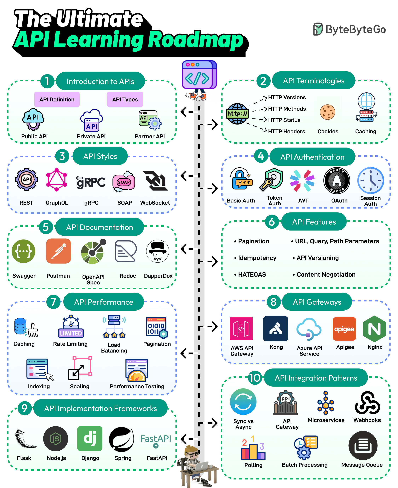

APIs are the backbone of communication over the Internet. Every
developer needs to learn about APIs. Here’s a roadmap that covers the
most important topics:
-
Introduction to APIs
-
API is a set of protocols and tools for building applications.
Different types of APIs exist, such as public, private, and
partner.
-
API Terminologies
-
Various API terminologies, such as HTTP versions, cookies, and
caching, need to be understood.
-
API Styles
-
The most common API styles are REST, SOAP, GraphQL, gRPC, and
WebSockets
-
API Authentication
-
API Authentication techniques like Basic Auth, Token, JWTs,
OAuth, and Session Auth
-
API Documentation
-
A good API is understandable. API Documentation tools like
Swagger, Postman, Redoc, and DapperDox make it possible.
-
API Features
-
Key API features include pagination, parameters, idempotency,
API versioning, HATEOAS, and content negotiation
-
API Performance Techniques
-
Common API performance techniques are caching, rate limiting,
load balancing, pagination, DB indexing, scaling, and
performance testing.
-
API Gateways
-
Learn about API Gateways such as Amazon API Gateway, Azure API
Services, Kong, Nginx, etc.
-
API Implementation Frameworks
-
The most popular API development frameworks are Node.js, Spring,
Flask, Django, and FastAPI
-
API Integration Patterns
-
Learn about various API integration patterns such as gateways,
event-driven, webhook, polling, and batch processing.